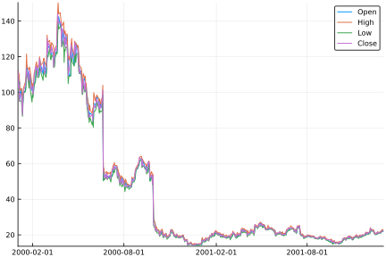
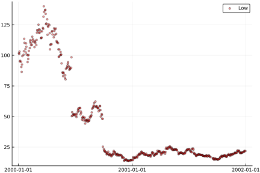
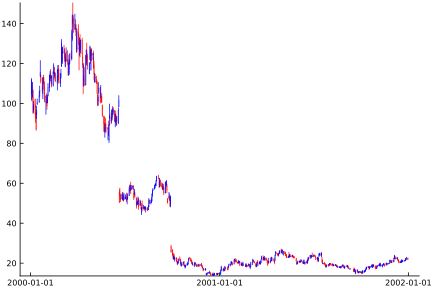

Plotting
TimeSeries defines a recipe that allows plotting to a number of different plotting packages using the Plots.jl framework (no plotting packages will be automatically installed by TimeSeries).
plot
The recipe allows TimeArray objects to be passed as input to plot. The recipe will plot each variable as an individual line, aligning all variables to the same y axis (here shown using PyPlot as a plotting backend).
using Plots, MarketData, TimeSeries
pyplot()
plot(MarketData.ohlc)
More sophisticated plots can be created by using keyword attributes and subsets:
plot(MarketData.ohlc[:Low], seriestype = :scatter, markersize = 3, color = :red, markeralpha = 0.4, grid = true)
A complete list of all attributes and plotting possibilities can be found in the Plots documentation.
Plotting candlestick:
plot(TimeSeries.Candlestick(MarketData.ohlc))